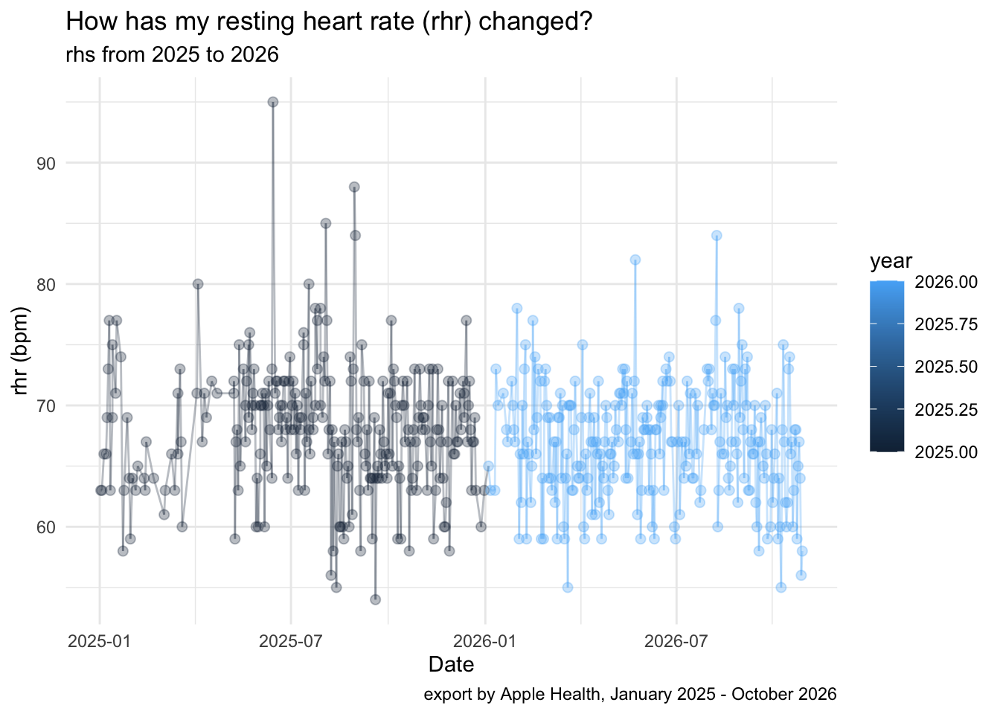

Personal Visualization Journey
Prepare and load the resting heart rate data for my PVJ. I exported the data from my phone, and it’s only available as an xml. file. Online tools cannot successfully convert xml. to csv.
AI Assistance to translate xml file into csv:
Code
file_path <- path.expand(
"~/Documents/GitHub/ds112-portfolio-angelyan9966/pvj/apple_health_export/export.xml"
)
# Open the XML file for reading
con <- file(file_path, open = "r")
rhr_lines <- character()
repeat {
lines <- readLines(con, n = 10000, warn = FALSE)
if (length(lines) == 0) break
matches <- grep(
'type="HKQuantityTypeIdentifierRestingHeartRate"',
lines,
value = TRUE,
fixed = TRUE
)
rhr_lines <- c(rhr_lines, matches)
}
close(con)
# Check the number of records
length(rhr_lines)[1] 1533Code
# Extract attributes from the XML records
extract_attr <- function(lines, attribute) {
pattern <- paste0('.* ', attribute, '="([^"]*)".*')
ifelse(
grepl(paste0(' ', attribute, '="'), lines),
sub(pattern, "\\1", lines),
NA_character_
)
}
rhr <- tibble(
date = extract_attr(rhr_lines, "startDate"),
resting_hr = as.numeric(extract_attr(rhr_lines, "value")),
unit = extract_attr(rhr_lines, "unit")
)
# Explore the extracted data
head(rhr)# A tibble: 6 × 3
date resting_hr unit
<chr> <dbl> <chr>
1 2022-01-14 19:27:31 -0500 80 count/min
2 2022-01-15 23:47:41 -0500 61 count/min
3 2022-01-16 19:08:24 -0500 67 count/min
4 2022-01-17 21:10:47 -0500 51 count/min
5 2022-01-18 22:20:31 -0500 62 count/min
6 2022-01-19 23:50:14 -0500 59 count/minRows: 1,533
Columns: 3
$ date <chr> "2022-01-14 19:27:31 -0500", "2022-01-15 23:47:41 -0500", "…
$ resting_hr <dbl> 80, 61, 67, 51, 62, 59, 72, 66, 61, 64, 66, 61, 61, 64, 66,…
$ unit <chr> "count/min", "count/min", "count/min", "count/min", "count/… date resting_hr unit
Length :1533 Min. :42.00 Length :1533
N.unique :1532 1st Qu.:64.00 N.unique : 1
N.blank : 0 Median :67.00 N.blank : 0
Min.nchar: 25 Mean :67.24 Min.nchar: 9
Max.nchar: 25 3rd Qu.:71.00 Max.nchar: 9
Max. :95.00 my work start here
My Resting Heart Rate (2025–2026)
For my PVJ I chose to explore my resting heart rate (rhr), by using data collected by my apple health. rhr is the number of times the heart beats per minute while the body is at rest. it can be influced at different factors. This project I will focus on the time in 2025 - 2026, especially as my daily routine shifts between academic semester, summer intern, and breaks. I hope to explore some noticeable patterns over time and how they might be impacted.
Code
Rows: 516
Columns: 3
$ date <date> 2025-01-02, 2025-01-03, 2025-01-05, 2025-01-07, 2025-01-08…
$ resting_hr <dbl> 63, 63, 66, 66, 69, 73, 77, 63, 69, 75, 71, 77, 74, 58, 63,…
$ unit <chr> "count/min", "count/min", "count/min", "count/min", "count/… date resting_hr unit
Min. :2025-01-02 Min. :54.00 Length :516
1st Qu.:2025-08-07 1st Qu.:64.00 N.unique : 1
Median :2025-12-25 Median :67.00 N.blank : 0
Mean :2025-12-31 Mean :67.43 Min.nchar: 9
3rd Qu.:2026-06-01 3rd Qu.:71.00 Max.nchar: 9
Max. :2026-10-28 Max. :95.00 [1] 516Code
# A tibble: 2 × 2
year mean_rhr
<dbl> <dbl>
1 2025 68.0
2 2026 66.9Code
# viz: Resting Heart Rate Over Time
ggplot(rhr, aes(x = date, y = resting_hr, color = year)) +
geom_point(alpha = 0.3, size = 2) +
geom_line(alpha = 0.3) +
labs(
title = "How has my resting heart rate (rhr) changed?",
subtitle = "rhs from 2025 to 2026",
x = "Date",
y = "rhr (bpm)",
caption = "export by Apple Health, January 2025 - October 2026"
) +
theme_minimal()
Code
Rows: 8
Columns: 3
$ start <chr> "1/1/2025", "1/23/2025", "5/13/2025", "9/2/2025", "12/18/2025",…
$ end <chr> "1/22/2025", "5/12/2025", "9/1/2025", "12/17/2025", "1/21/2026"…
$ period <chr> "Winter Break", "Spring Semester", "Summer Break", "Fall Semest…# A tibble: 6 × 3
start end period
<chr> <chr> <chr>
1 1/1/2025 1/22/2025 Winter Break
2 1/23/2025 5/12/2025 Spring Semester
3 5/13/2025 9/1/2025 Summer Break
4 9/2/2025 12/17/2025 Fall Semester
5 12/18/2025 1/21/2026 Winter Break
6 1/22/2026 5/11/2026 Spring Semester